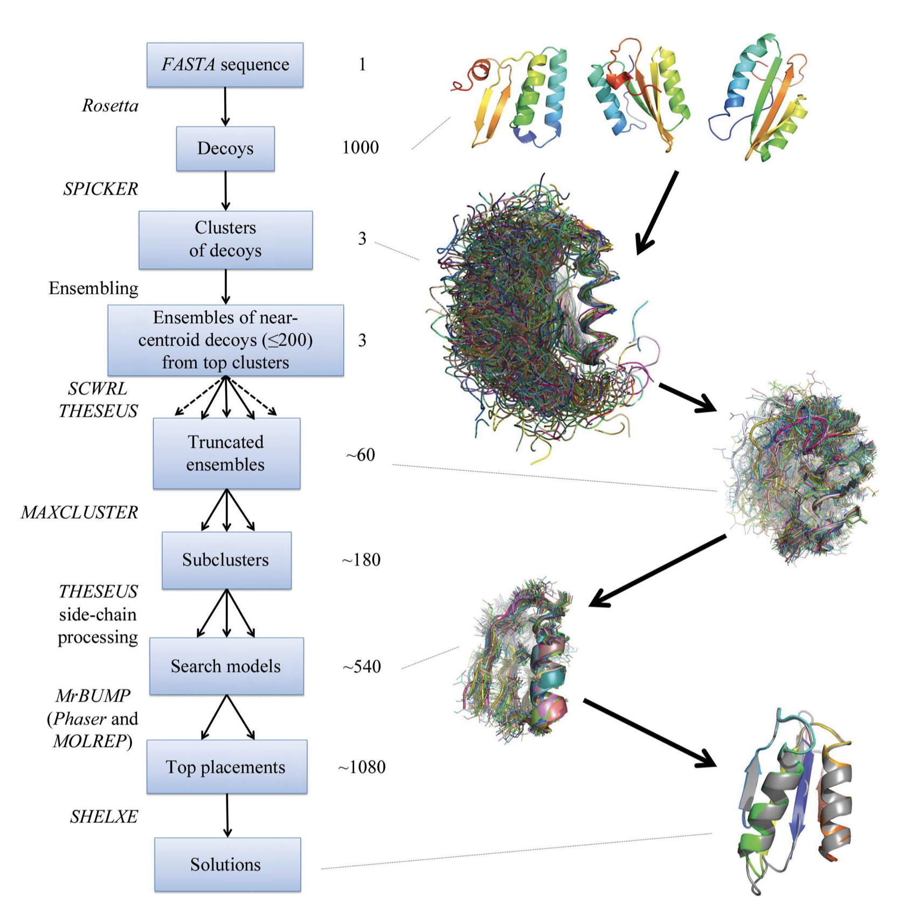

4.5. Ample¶
In many cases no homologous structure is available or those available are evolutionarily too distant. In order to address these situations, ab initio (or de novo) models are increasingly becoming considered as search models in molecular replacement. Ab initio modelling attempts to predict three-dimensional structures of proteins in the absence of any guidance from known homologous structures.
AMPLE (Ab initio Modelling of Proteins for moLEcular replacement) is a computational pipeline based on the clustering and truncation of cheaply obtained ab initio models for the preparation of structure ensembles is described. Clustering is used to select models and to quantitatively predict their local accuracy, allowing rational truncation of predicted inaccurate regions.
As input AMPLE requires the FASTA sequence file and a diffraction data file .
The AMPLE workflow is described in the figure below [Bibby et al. 2012].
{kind=link}
For successful implementation of AMPLE limitations for target protein such as >330 residues and >2.8Å resolution are required. All α-proteins are particularly favourable (80% success) and mixed α/β targets were solved in 36% of cases, but all β-proteins are presently unlikely to succeed.
References
More details you can find on AMPLE official page